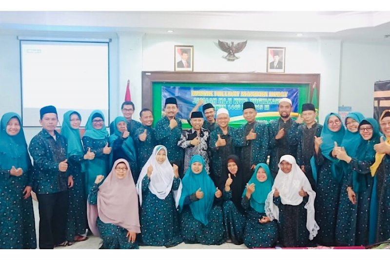

Layanan Inovasi Haji Kankemenag Kota Yogyakarta
Yogya (PHU) --- Sistem Bimbingan Ibadah Haji Mandiri (Simbah Mandi) merupakan salah satu di antara inovasi Kantor Kementerian Agama (Kankemenag) Kota Yogyakarta.
Program tersebut sudah digulirkan pada tahun 2018, ini diklaim efektif membantu jemaah haji yang tidak ikut tergabung dalam Kelompok Bimbingan Ibadah Haji (jemaah non-KBIH).
“Secara teknis pelaksanaannya dimulai setelah kita mendapatkan data jemaah non-KBIH atau yang tidak tergabung dengan KBIH Jemaah ini kita kumpulkan dan kita beri bimbingan manasik (Bimsik) kepada mereka sejak dini agar memiliki bekal manasik yang sama seperti jemaah lainnya,” ucap Kepala Kankemenag Kota Yogyakarta, Nur Abadi melalui keterangan tertulisnya, Rabu (22/7/2020).
Adapun Bimsik dilaksanakan sebanyak 10 kali tiap hari Sabtu. Kankemenag Kota Yogyakarta menyediakan narasumber dan tempat penyelenggaraan.
“Jika dirasa kurang, jemaah dipersilahkan menambah Bimsik, kami tetap akan menyiapkan narasumber dan tempat penyelenggaraan,” imbuhnya.
Selain ditujukan bagi jemaah non-KBIH, program Simbah Mandi Kankemenag Kota Yogyakarta ini juga dapat dirasakan manfaatnya bagi jemaah susulan.
“Adapun jumlah peserta Bimsik sekitar 15-20 persen dari keseluruhan jumlah jemaah haji Kota Yogyakarta. Kuota haji untuk Kota Yogyakarta adalah 498 jemaah tiap tahun,” tambah Nur Abadi.
Seorang jemaah, Idris (70) warga Sosromenduran Kota Yogyakarta yang ikut merasakan manfaat program Simbah Mandi memberikan testimoni.
“Sangat bagus sekali, saya merasakan betul manfaatnya sebagai jemaah haji mandiri,” ungkapnya. “Jadi kita tidak perlu khawatir jika tidak ikut KBIH, karena Kankemenag Kota Yogyakarta memberikan bimbingan kepada kita, sangat bagus sekali,” sambungnya.
Program Simbah Mandi ini menjadi bukti negara hadir untuk segenap warga. Hal ini terlihat melalui Kankemenag Kota Yogyakarta sigap melayani bimbingan manasik kepada jemaah non-KBIH.
Satu di antara inovasi yang menjadi bekal penting bagi Kankemenag Kota Yogyakarta untuk maju dalam Evaluasi Pelayanan Publik oleh Kementerian Pendayagunaan Aparatur Negara dan Reformasi Birokrasi. (Bram)
Sumber : Situs Resmi Kemenag RI